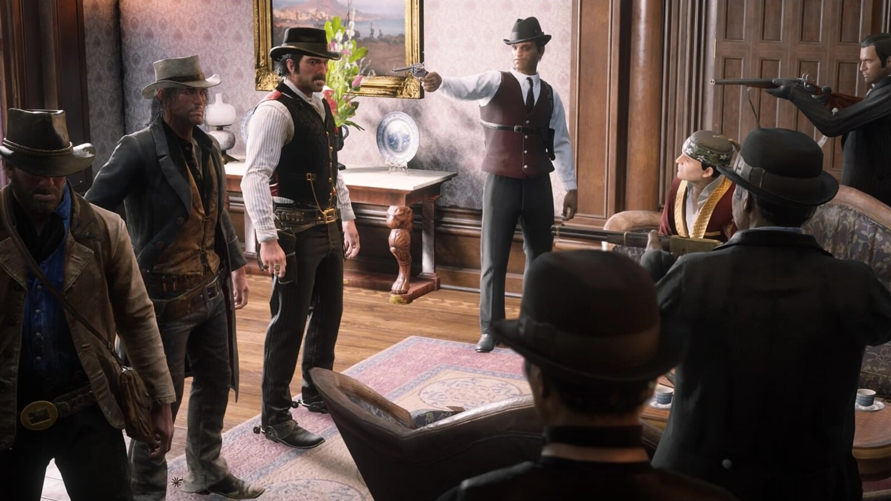
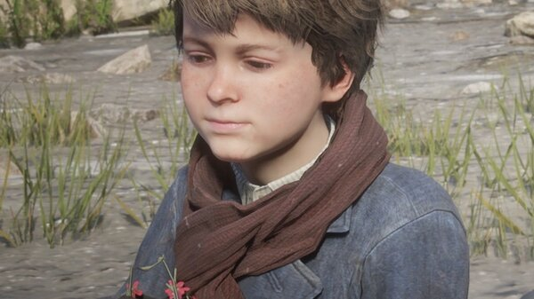

Character · Saint Denis
Angelo Bronte
Angelo Bronte is the crime lord who controls the city of Saint Denis in Red Dead Redemption 2. An Italian-born gangster who styles himself a man of honour, he becomes first a reluctant ally and then an enemy of the Van der Linde gang.
Bronte is the man who buys the kidnapped Jack Marston and returns him to the gang, before Dutch turns on him and kills him.
- Died
- 1899
- Status
- Deceased
- Nationality
- Italian
- Role
- Crime lord of Saint Denis
- Games
- Red Dead Redemption 2
Biography
The boss of Saint Denis
Bronte rules Saint Denis through bribery, intimidation and political connections. When the Braithwaites sell him Jack Marston, the gang comes to his mansion to get the boy back, and Bronte returns Jack in exchange for a job.
Alliance and betrayal
Bronte and the gang work together briefly, but neither side trusts the other. In "Revenge is a Dish Best Eaten", the gang abducts him from his mansion, and Dutch drowns him and feeds his body to an alligator.
Personality
Charming, theatrical and cruel, Bronte plays the part of a refined aristocrat of crime. Beneath the manners he is a brutal operator who treats violence as ordinary business.
Relationships

Dutch van der Linde
The gang leader he briefly allies with and who ultimately murders him.

Arthur Morgan
Dutch's right hand, who deals with Bronte to recover Jack and takes part in his abduction.

Jack Marston
The kidnapped boy Bronte holds and then returns to the gang.

John Marston
Jack's father, desperate to get his son back from the Saint Denis crime lord.
Death and fate
Bronte is killed by Dutch in 1899. His murder removes a major power in Saint Denis and is one of the clearest early signs of Dutch's growing instability.
Behind the scenes
Bronte appears in Red Dead Redemption 2 (2018), mainly across Chapter 4. Though present for only one chapter, he is one of the game's most memorable antagonists.
Trivia
- He buys the kidnapped Jack Marston from the Braithwaites.
- He calls himself a man of honour.
- He is drowned and killed by Dutch.
Gallery